공조냉동기계산업기사 (2014-03-02 기출문제)
1과목: 공기조화
1. 우리나라에서 오전 중에 냉방 부하가 최대가 되는 존(Zone)은 어느 방향인가?
- 동쪽 방향
- 서쪽 방향
- 남쪽 방향
- 북쪽 방향
(정답률: 87%)

2. 환기방식 중 송풍기를 이용하여 실내에 공기를 공급하고, 배기구나 건축물의 틈새를 통하여 자연척으로 배기하는 방법은?
- 제1종 환기
- 제2종 환기
- 제3종 환기
- 제4종 환기
(정답률: 78%)
3. 냉수코일의 설계에 있어서 코일 출구온도 10℃, 코일 입구온도 5℃, 전열부하 83740kJ/h일 때, 코일 내 순환수랑(L/min)은 약 얼마인가? (단, 물의 비열은 4.2kJ/kgㆍK 이다.)
- 55.5L/min
- 66.5L/min
- 78.5L/min
- 98.7L/min
(정답률: 72%)
4. 공기조화 부하계산을 할 때 고려하지 않아도 되는 것은?
- 열원방식
- 실내 온ㆍ습도의 설정조건
- 지붕재료 및 치수
- 실내 발열기구의 사용시간 및 발열랑
(정답률: 71%)
5. 냉수 또는 온수코일의 용랑제어를 2방 밸브로 하는 경우 물배관계통의 특성 중 옳은 것은?
- 코일 내의 수랑은 변하나 배관 내의 유량은 부하 변동에 관계없이 정유량(定流量)이다.
- 부하변동에 따라 펌프의 대수제어가 가능하다.
- 차압제어밸브가 필요 없으므로 펌프의 양정을 낮게 할 수 있다.
- 코일 내의 수량이 변하지 않으므로 전열효과가 크다.
(정답률: 64%)
6. 인체에 작용하는 실내 온열환경 4대요소가 아닌 것은?
- 청정도
- 습도
- 기류속도
- 공기온도
(정답률: 85%)
7. 바이패스 팩터에 관한 설명으로 옳지 않은 것은?
- 바이패스 팩터는 공기조화기를 공기가 통과할 경우 공기의 일부가 변화를 받지 않고 원 상태로 지나쳐갈 때 이 공기량과 전체 통과 공기량에 대한 비율을 나타낸 것이다.
- 공기조화기를 통과하는 풍속이 감소하면 바이패스 팩터는 감소한다.
- 공기조화기의 코일열수 및 코일 표면적이 적을 때 바이패스 팩터는 증가한다.
- 공기조화기의 이용 가능한 전열 표면적이 감소하면 바이패스 팩터는 감소한다.
(정답률: 72%)
8. 공기 세정기에 관한 설명으로 옳지 않은 것은?
- 공기 세정기의 통과풍속은 일반적으로 2~3m/s이다.
- 공기 세정기의 가습기는 노즐에서 물을 분무하여 공기에 충분히 접촉시켜 세정과 가습을 하는 것이다.
- 공기 세정기의 구조는 루버, 분무노즐, 플러딩노즐, 엘리미네이터 등이 케이싱 속에 내장되어 있다.
- 공기 세정기의 분무 수압은 노즐 성능상 20~50kPa이다.
(정답률: 86%)
9. 염화리륨, 트리에틸맨 글리콜 등의 액체를 사용하여 감습하는 장치는?
- 냉각감습장치
- 압축감습장치
- 흡수식 감습장치
- 세정식 감습장치
(정답률: 85%)
10. 증기난방에 관한 설명으로 옳지 않은 것은?
- 열매온도가 높아 방열면적이 작아진다.
- 예열시간이 짧다.
- 부하변동에 따른 방열랑의 제어가 곤란하다
- 증기의 증발현열을 이용한다‘
(정답률: 75%)
11. 공기조화 방식의 문류 중 공기-물 방식이 아닌 것은?
- 유인 유닛방식
- 덕트병용 팬코일 유닛방식
- 복사 냉난방 방식(패널에어 방식)
- 멀티존 유닛방식
(정답률: 60%)
12. 도서관의 체적이 630m3이고 공기가 1시간에 29회 비율로 틈새바람에 의해 자연 환기될 때 풍랑(m3/min)은 약 얼마인가?
- 295
- 304
- 444
- 572
(정답률: 77%)
13. 다음 그림은 송풍기의 특성 곡선이다. 점선으로 표시된 곡선 B는 무엇을 나타내는가?
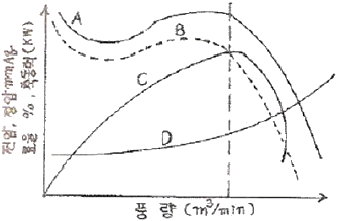
- 축동력
- 효율
- 전압
- 정압
(정답률: 77%)
14. 덕트 설계 시 고려하지 않아도 되는 사항은?
- 덕트로부터의 소음
- 덕트로부터의 열손실
- 공기의 흐름에 따른 마찰 저항
- 덕트 내를 흐르는 공기의 엔탈피
(정답률: 74%)
15. 실내의 기류분포에 관한 설명으로 옳은 것은?
- 소비되는 열랑이 많아져서 추위를 느끼게 되는 현상 또는 인체에 불쾌한 냉감을 느끼게 되는 것을 유효 드래프트라고 한다.
- 실내의 각 점에 대한 EDT를 구하고, 전체 점수에 대한 쾌적한 접수의 비율을 T/L비 라고 한다.
- 일반사무실 취출구의 허용 풍속은 1.5~2.5m/s이다.
- 1차 공기와 전 공기의 비를 유인비라 한다.
(정답률: 64%)
16. 증기-물 또는 물-물 열교환기의 종류에 해당되지 않는 것은?
- 원통다관헝 열교환기
- 전열 교환기
- 판형 열교환기
- 스파이럴형 열교환기
(정답률: 72%)
17. 공기 중의 수증기 분압을 포화압력으로 하는 온도를 무엇이라 하는가?
- 건구온도
- 습구온도
- 노점온도
- 글로브(Globe) 온도
(정답률: 69%)
18. 보일러의 출력표시에서 난방부하와 급탕부하를 합한 용랑으로 표시되는 것은?
- 과부하출력
- 정격출력
- 정미출력
- 상용출력
(정답률: 74%)
19. 온수배관 시공 시 주의할 사향으로 옳은 것은?
- 각 방열기에는 필요시에만 공기배출기를 부착한다.
- 배관 최저부에는 배수밸브를 설치하며, 하항구배로 설치한다.
- 팽창관에는 안전을 위해 반드시 밸브를 설치한다.
- 배관 도중에 관지름을 바꿀 때에는 편심이음쇠를 사용하지 않는다.
(정답률: 77%)
20. 습공기선도상에 나타나 있는 것이 아닌 것은?
- 상대습도
- 건구온도
- 절대습도
- 포화도
(정답률: 81%)
2과목: 냉동공학
21. 냉동장치의 안전장치 중 압축기로의 흡입압력이 소정의 압력 이상이 되었을 경우 과부하에 의한 압축기용 전동기의 위험을 방지하기 위하여 설치되는 기기는?
- 증발압력 조정밸브(EPR)
- 흡입압력 조정밸브(SPR)
- 고압 스위치
- 저압 스위치
(정답률: 86%)
22. 열원에 따른 열펌프의 종류가 아닌 것은?
- 물-공기 열펌프
- 태앙열 이용 열펌프
- 현열 이용 열펌프
- 지중열 이용 열펌프
(정답률: 64%)
23. 팽창밸브 입구에서 410kcal/kg의 엔탈피를 갖고 있는 냉매가 팽창밸브를 통과하여 압력이 내려가고 포화액과 포화증기의 혼합물, 즉 습증기가 되었다. 습증기 중 포화액의 유랑이 7kg/min일 때 전 유출 냉매의 유랑은 약 얼마인가? (단, 팽창밸브를 지 난 후의 포화액의 엔탈피는 54kcal/kg, 건포화증기의 엔탈피는 500kcal/kg이다.)
- 30.3kg/min
- 32.4kg/min
- 34.7kg/min
- 36.5kg/min
(정답률: 43%)
24. 매분 염화칼슘 용액 350L/min를 -5℃에서 -10℃까지 냉각시키는 데 필요한 냉동능력은 얼마인가? (단, 염화칼슐 용액의 비중은 1.2, 비열은 0.6kcal/kgf℃ 이다.)
- 78300(kcal/h)
- 75600(kcal/h)
- 72500(kcal/h)
- 71900(kcal/h)
(정답률: 64%)
25. C.A 냉장고(Controlled Atmosphere Storage Room)의 용도로 가장 적당한 것은?
- 가정용 냉장고로 쓰인다.
- 제빙용으로 주로 쓰인다.
- 청과물 저장에 쓰인다.
- 공조용으로 철도, 항공에 주로 쓰인다.
(정답률: 84%)
26. 압축기 직경이 100mm, 행정이 850mm, 회전수 2,000rpm, 기통 수 4일 때 피스톤 배출량은?
- 3204m3/h
- 3316m3/h
- 3458m3/h
- 3567m3/h
(정답률: 54%)
27. 냉매와 화학분자식이 옳게 짝지어진 것은?
- R-500 → CCI2F4 + CH2CHF2
- R-502 → CHCIF2 + CCIF2CF3
- R-22 → CCI2F2
- R-717 → NH4
(정답률: 76%)
28. 2원 냉동장치의 저온측 냉매로 적합하지 않은 것은?
- R-22
- R-14
- R-13
- 에틸렌
(정답률: 67%)
29. 냉매가 구비해야 할 이상적인 물리적 성질로 틀린 것은?
- 임계온도가 높고 응고온도가 낮을 것
- 같은 냉동능력에 대하여 소요동력이 적을 것
- 전기 절연성이 낮을 것
- 저온에서도 대기압 이상의 압력으로 증발하고 상온에서 비교적 저압으로 액화할 것
(정답률: 77%)
30. 2단 압축 2단 팽창 냉동장치에서 중간냉각기가 하는 역할이 아닌 것은?
- 저단 압축기의 토출가스 과열도를 낮춘다.
- 고압 냉매액을 과냉시켜 냉동효과를 증대시킨다.
- 저단 토출가스를 재압축하여 압축비를 증대시킨다.
- 흡입가스 중의 액을 분리하여 리키드 백을 방지한다.
(정답률: 60%)
31. 다음 냉매 중 아황산가스에 접했을 때 흰 연기를 내는 가스는?
- 프레온 12
- 크로메틸
- R-410A
- 암모니아
(정답률: 79%)
32. 교축작용과 관계가 적은 것은?
- 등엔탈피 변화
- 팽창밸브에서의 변화
- 엔트로피의 증가
- 등적변화
(정답률: 66%)
33. 10℃와 85℃ 사이의 물을 열원으로 역카르노 사이클로 작동되는 냉동기(εC)와 히트펌프(εH)의 성적계수는 각각 얼마인가?
- εC = 1.00, εH = 2.00
- εC = 2.12, εH = 3.12
- εC = 2.93, εH = 3.93
- εC = 3.78, εH = 4.78
(정답률: 61%)
34. 팽창밸브가 과도하게 닫혔을 때 생기는 현상이 아닌 것은?
- 증발기의 성능 저하
- 흡입가스의 과열
- 냉동능력 증가
- 토출가스의 온도상승
(정답률: 83%)
35. 공랭식 응축기에 있어서 냉매가 응축하는 온도는 어떻게 결정하는가?
- 대기의 온도보다 30°C(54°F) 높게 잡는다.
- 대기의 온도보다 19°C(35°F) 높게 잡는다.
- 대기의 온도보다 10°C(18°F) 높게 잡는다.
- 증발기 속의 냉매 증기를 과열도에 따라 높인 온도로 잡는다.
(정답률: 75%)
36. 흡수식 냉동기에 대한 설명 중 옳은 것은?
- H20 +LiBr계에서는 응축 측에서 비체적이 커지므로 대용랑은 공랭식화가 곤란하다.
- 압축기는 없으나, 발생기 등에서 사용되는 전력랑은 압축식 냉동기보다 많다.
- H20 +LiBr계나 H20+NH3계에서는 흡수제가 H2O이다.
- 공기조화용으로 많이 사용되나, H20 +LiBr계는 0℃ 이하의 저온을 얻을 수 있다.
(정답률: 51%)
37. 온도식 팽창밸브에서 흐르는 냉매의 유량에 영향을 미치는 요인이 아닌 것은?
- 오리피스 구경의 크기
- 고ㆍ저압 측 간의 압력차
- 고압 측 액상 냉매의 냉매온도
- 감온통의 크기
(정답률: 81%)
38. 암모니아 냉동장치에 대한 설명 중 옳은 것은?
- 압축비가 증가하면 체적 효율도 증가한다.
- 표준 냉동 사이클로 운전할 경우 R-12에 비해 토출가스의 온도가 낮다.
- 기밀시험에 산소가스를 이용하는 것은 폭발의 가능성이 없기 때문이다.
- 증발압력 조정밸브를 설치하는 것은 냉매의 증발 압력을 일정 이상으로 유지하기 위해서다.
(정답률: 58%)
39. 할로겐 원소에 해당되지 않는 것은?
- 불소[F]
- 수소[H]
- 염소[Cl]
- 브롬[Br]
(정답률: 82%)
40. 다음 열역학적 설명으로 옳지 않은 것은?
- 물체의 순간(현재)상태만에 관계하는 양을 상태량이라 하며 열랑과 일 등은 상태량이다.
- 평형을 유지하면서 조용히 상태변화가 일어나는 과정은 준 정적변화이며 가역 변화라고 할 수 있다.
- 내부에너지는 그 물질의 분자가 임의 온도 하에서 갖는 역학적 에너지의 총합이랴고 할 수 있다.
- 온도는 내부에너지에 비례하여 증가한다.
(정답률: 50%)
3과목: 배관일반
41. 흄(Hume)관이라고도 하는 관은?
- 주철관
- 경질염화비닐관
- 폴리에틸렌관
- 원심력 철근콘크리트관
(정답률: 72%)
42. 가스배관의 기밀시험 방법에 관한 설명으로 옳은 것은?
- 질소 등의 불활성 가스를 사용하여 시험한다.
- 수압(水壓)시험을 한다.
- 매설 후 산소를 사용하여 시험한다.
- 배관의 무식에 의하여 시험한다.
(정답률: 77%)
43. 열팽창에 의한 배관의 신축이 방열기에 영향을 주지 않도록 방열기 주위 배관에 일반적으로 설치하는 신축이음쇠는?
- 신축곡관
- 스위블 조인트
- 슬리브헝 신축이음
- 벨로스형 신축이음
(정답률: 72%)
44. 관의 결합방식 표시방법 중 용접식 기호로 옳은 것은?
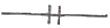
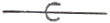
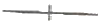
(정답률: 87%)
45. 급탕배관에 대한 설명으로 옳지 않은 것은?
- 공기빼기 밸브를 설치한다.
- 벽 관통 시 슬리브를 넣어서 신축을 자유를게 한다.
- 관의 부식을 고려하여 노출배관하는 것이 좋다.
- 배관의 신축은 고려하지 않아도 좋다.
(정답률: 81%)
46. 냉각탑을 사용하는 경우의 일반적인 냉각수 온도 조절 방법이 아닌 것은?
- 전동 2way valve를 사용하는 방법
- 전동 혼합 3way valve를 사용하는 방법
- 전동 분류 4way valve를 사용하는 방법
- 냉각탑 송풍기를 on-off제어하는 방법
(정답률: 69%)
47. 3세주헝 주철제방열기 3-600을 설치할 때 사용증기의 온도가 120℃이고, 실내공기의 온도가 20℃, 난방부하 10000kcal/h를 필요로 하면 설치할 방열기의 소요 쪽수는 얼마인가? (단, 방열계수는 7.9(kcal/m2h℃)이고, 1쪽당 방열면적은 0 13m2이다.)
- 88쪽
- 98쪽
- 108쪽
- 118쪽
(정답률: 65%)
48. 트랩의 봉수 유실 원인이 아닌 것은?
- 증발작용
- 모세관작용
- 사이펀 작용
- 배수작용
(정답률: 70%)
49. 컴퓨터실의 공조방식 중 바닥 아래 송풍방식(프리액세스 취출방식)의 특징이 아닌 것은?
- 컴퓨터에 일정 온도의 공기 공급이 용이하다.
- 급기의 청정도가 천장 취출방식보다 높다.
- 바닥온도가 낮게 되고 불쾌감을 느끼는 경우가 있다.
- 온ㆍ습도 조건이 국소적으로 불만족한 경우가 있다.
(정답률: 55%)
50. 연단에 아마인유를 배합한 것으로 녹스는 것을 방지하기 위하여 샤용되며 도료의 막이 굳어서 풍화에 대해 강하고 다른 착색도료의 밀칠용으로 널리 사용되는 것은?
- 알루미늄 도료
- 광명단 도료
- 합성수지 도료
- 산화철 도료
(정답률: 78%)
51. 도시가스를 공급하는 배관의 종류가 아닌 것은?
- 본관
- 공급관
- 내관
- 주관
(정답률: 77%)
52. 냉매배관 중 토출 측 배관 시공에 관한 실명으로 틀린 것은?
- 응축기가 압축기보다 높은 곳에 있을 때 2.5m보다 높으면 트랩 장치를 한다.
- 수직관이 너무 높으면 2m마다 트랩을 1개씩 설치한다.
- 토출관의 합류는 Y이음으로 한다.
- 수평관은 모두 끝 내림 구배로 배관한다.
(정답률: 75%)
53. 하나의 장치에서 4방 밸브를 조작하여 냉ㆍ난방 어느 쪽도 사용할 수 있는 공기조화용 펌프는?
- 열펌프
- 냉각펌프
- 원심펌프
- 왕복펌프
(정답률: 80%)
54. 나사용 패킹으로 냉매배관에 많이 사용되며 빨리 굳는 성질을 가진 것은?
- 일산화연
- 페인트
- 석면각형 패킹
- 아마존 패킹
(정답률: 77%)
55. 증기난방 설비의 수평배관에서 관경을 바꿀 때 사용하는 이음쇠로 가장 적합한 것은?
- 편심 리듀셔
- 동심 리듀셔
- 유니언
- 소켓
(정답률: 78%)
56. 공기 여과기의 분진포집 원리에 의해 분류한 집진형식에 해당되지 않는 것은?
- 정전식
- 여과식
- 가스식
- 충돌점착식
(정답률: 65%)
57. 도시가스 배관의 나사이음부와 전기계량기 및 전기개폐기의 거리로 옳은 것은?(오류 신고가 접수된 문제입니다. 반드시 정답과 해설을 확인하시기 바랍니다.)
- 10cm 이상
- 30cm 이상
- 60cm 이상
- 80cm 이상
(정답률: 67%)
58. 배수계통에 설치된 통기관의 역할과 거리가 먼 것은?
- 사이펀 작용에 의한 트랩의 봉수 유실을 방지한다.
- 배수관 내를 대기압과 같게 하여 배수흐름을 원활히 한다.
- 배수관 내로 신선한 공기를 유통시켜 관 내를 청결히 한다.
- 하수관이나 배수관으로부터 유해가스의 옥내 유입을 방지한다.
(정답률: 60%)
59. 배수배관의 시공상 주의사항으로 틀린 것은?
- 배수를 가능한 한 빨리 옥외 하수관으로 유출할 수 있을 것
- 옥외 하수관에서 유해가스가 건물 안으로 침입하는 것을 방지할 수 있을 것
- 배수관 및 통기관은 내구성이 풍부하고 물이 새지 않도록 접함을 완벽히 할 것
- 한랭지일 경우 동결 방지를 위해 배수관은 반드시 피목을 하며 통기관은 그대로 둘 것
(정답률: 85%)
60. 호칭지름 25A인 강관을 R150으로 90℃ 구부럼할 경우 곡선부의 길이는 악 몇 mm인가? (단, π는 3.14이다.)
- 118mm
- 236mm
- 354mm
- 547mm
(정답률: 58%)
4과목: 전기제어공학
61. 그림과 같은 논리회로의 출력 Y는?
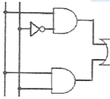
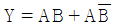
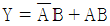
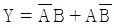
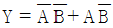
(정답률: 73%)
62. PC에 의한 계측에 있어, 센서에서 측정한 데이터를 PC에 전달하기 위해 필요한 필수적인 요소는?
- A/D 변환기
- D/A 변환기
- RAM
- ROM
(정답률: 78%)
63. 그림과 같이 실린더의 한쪽으로 단위시간에 유입하는 유체의 유랑을 x(t)라 하고 피스톤의 움직임을 y(t)로 한다. 시간이 경과한 후의 전달함수를 구해보면 어떤 요소가 되는가?
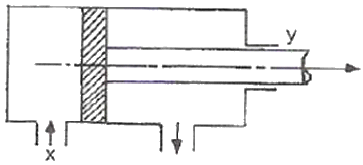
- 비례요소
- 미분요소
- 적분요소
- 미적분요소
(정답률: 57%)
64. 그림과 같은 회로는 어떤 논리회로인가?
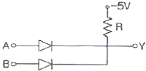
- AND 회로
- OR 회로
- NOT 회로
- NOR 회로
(정답률: 61%)
65. 전달함수를 정의할 때의 조건으로 옳은 것은?
- 모든 초기값을 고려한다.
- 모든 초기값을 0으로 한다
- 입력신호만을 고려한다.
- 주파수 특성만을 고려한다.
(정답률: 83%)
66. 다음 중 동기화 제어변압기로 사용되는 것은?
- 싱크로 변압기
- 앰플리다인
- 차동변압기
- 리졸버
(정답률: 60%)
67. 120Ω의 저항 4개를 접속하여 가장 작은 저항값을 얻기 위한 회로 접속법은 어느 것인가?
- 직렬접속
- 병렬접속
- 직병렬접속
- 병직렬접속
(정답률: 79%)
68.
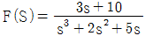
일 때의 최종치는?- 0
- 1
- 2
- 8
(정답률: 60%)
69. 역률 80%인 부하의 유효전력이 80kW이면 무효전력은 몇 kVar인가?
- 40
- 60
- 80
- 100
(정답률: 62%)
70. 변압기를 스코트(Scott) 결선할 때 이용률은 몇 %인가?
- 57.7
- 86.6
- 100
- 173
(정답률: 66%)
71. 자동제어계의 구성 중 기준입력과 궤환신호의 차를 계산해서 제어계가 보다 안정된 동작을 하도록 필요한 신호를 만들어 내는 부분은?
- 목표설정부
- 조절부
- 조작부
- 검출부
(정답률: 52%)
72. 유도전동기의 고정손에 해당하지 않는 것은?
- 1차 권선의 저항손
- 철손
- 베어링 마찰손
- 풍손
(정답률: 68%)
73. 다음 블록선도의 입력 R에 5를 대입하면 C의 값은 얼마인가?
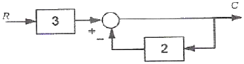
- 2
- 3
- 4
- 5
(정답률: 54%)
74. 교류에서 실효값과 최댓값의 관계는?
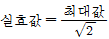
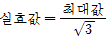
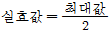
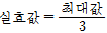
(정답률: 80%)
75.
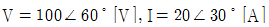
일 때 유효전력은 악 훌[W] 인가?- 1000
- 1414
- 1732
- 2000
(정답률: 56%)
76. 축전지의 용랑을 나타내는 단위는?
- Ah
- VA
- W
- V
(정답률: 78%)
77. 그림과 같은 회로의 전달함수는?
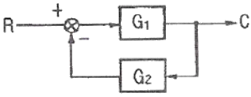
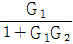
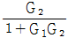
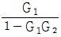
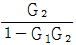
(정답률: 67%)
78. 전류에 의해 생기는 자속은 반드시 폐회로를 이루며, 자속이 전류와 쇄교하는 수를 자속 쇄교수라 한다. 자속 쇄교수의 단위에 해당되는 것은?
- Wb
- AT
- WbT
- H
(정답률: 72%)
79. 유도전동기의 1차 전압 변화에 의한 속도제어 시 SCR을 사용하여 변화시키는 것은?
- 주파수
- 토크
- 위상각
- 전류
(정답률: 64%)
80. 제어기기의 대표적인 것으로는 검출기, 변환기, 증폭기, 조작기기 를 들 수 있는데 서보모터는 어디에 속하는가?
- 검출기
- 변환기
- 증폭기
- 조작기기
(정답률: 80%)